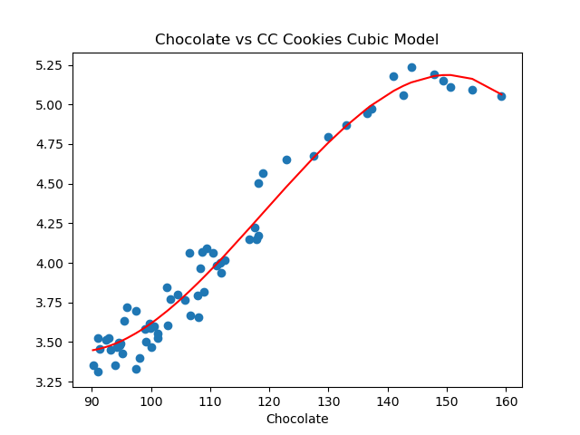

Program 3: Cookie Pricing. Due noon, Friday, 6 October.
This program builds models for economic data from St. Louis Federal Reserve Bank Economic Data (FRED), using polynomial features and regularization for economica data.
We will focus, on the average price of chocolate chip cookies and their ingredients, but it can be generalized for other price indices. The pipeline below is general enough to handle actual prices as well as changes over time and price indices. The first steps are importing the data and splitting it into training and testing sets. The training set is then used to determine the degree of the polynomial for the model, and once that is determined, regularization, with cross validation, is used to fit a model that can be validated with the testing data and used for predictions. Start by downloading the data file: Once you have downloaded some test data sets to your device, the next thing to do is format the data to be usable for analysis. The data from FRED is very clean, so, we will only need to split into training and testing sets. Add the following function to your Python program: For example, let's input the cookie dataset:
If we use the default for the last argument, the resulting DataFrame has the original column names: We can then split the data into training and testing subsets: Once you have written your function, test it locally on the small test files. When it works, upload to Gradescope. Given the size of the files that we evaluate your code, you will find it much faster to develop and test the code in your IDE than debugging and testing in Gradescope. Now that we have the data, let's do some quick plots to get some intuition about how the possible explanatory variables (e.g. the ingredients) explain the price of chocolate chip cookies: which makes a scatter plot of each ingredient versus the chocolate cookie price, and includes the linear regression line with the 95% confidence interval for the regression highlighted: The linear models, especially for chocolate and sugar, fits the data well, but the plots suggest a quadratic might fit better than a linear model with a single input. Let's look at linear models that use multiple inputs, as well as polynomial models. As we did in Lecture 3 with modeling miles-per-gallon (MPG) for cars, let's build a multiple linear model using all inputs:
Continuing our example using all the training data sets that we partitioned above:
Learning Objective: to build models with polynomial features, employ thresholds to decide model fitness, and use regularization techniques to better fit models.
Available Libraries: pandas, numpy, scikit-learn, pickle, pytest, and core Python 3.6+. The available packages used for scikit-learn: sklearn.model_selection, sklearn.preprocessing, sklearn.linear_model, and sklearn.metrics.
Data Sources: St. Louis Federal Reserve Bank Online Data (FRED).
Sample Datasets: fred_ccc.csv
Federal Reserve Economic Data (FRED)
Chocolate Chip Cookies.Average Price: Cookies, Chocolate Chip (Cost per Pound/453.6 Grams) in U.S. City Average. It's index number is APU0000702421.Edit Graph.ADD LINE. eggs into the search bar. Choose the average price index (APU0000708111). And click on Add data series.APU0000FS1101), chocolate (PCU3113513113517), flour (APU0000701111), and sugar (APU0000715211).
X in the upper right corner to close the side bar menu.1980-01-01 and change it to 2018-04-01 (before which the butter index is not defined).DOWNLOAD and choose CSV and save the file to your working directory.
Preparing Data
import_data(csv_file, names=None):
This function takes two inputs:
The data in the file is read into a DataFrame with the csv_file: the name of a CSV file time series data for commodities from FRED.
names: a dictionary of names where the keys are the codes for commodity indices and the values are the name to be used for the column. The default value is None. DATE column is dropped. If names is not None, then the remaining column names correspond to the values of the names dictionary. For example, if the csv_file contains the chocolate chip cookie data, then a possible corresponding dictionary is:
names = {'APU0000702421' : 'CC Cookies', 'APU0000708111' : 'Eggs', 'APU0000FS1101' : 'Butter', 'PCU3113513113517' : 'Chocolate','APU0000701111' : 'Flour', 'APU0000715211' : 'Sugar'}
.
Any rows with non-numeric entries is dropped. You can replace non-numeric entries with NaN by converting to numeric and coercing errors (which will put in NaN if a entry is not numeric):
and then dropping rows with null entries (hint: df = df.apply(lambda col: pd.to_numeric(col, errors ='coerce'))df.dropna()).
The resulting DataFrame is returned with the column names taken from names.
split_data(df, xes_col_names, y_col_name, test_size = 0.33, random_state = 106):
This function takes 5 input parameters:
Returns the data split into 4 subsets, corresponding to those returned by train_test_split:
df: a DataFrame containing columns xes_col_names and y_col_name.xes_col_names: a list of column names of the independent variable.y_col_name: the name of the column of the dependent variable.test_size: accepts a float between 0 and 1 and represents the proportion of the data set to use for training. This parameter has a default value of 0.25.random_state: Used as a seed to the randomization. This parameter has a default value of 1870.x_train,
x_test,
y_train, and
y_test. where units is the "x" column and the input parameter, y_col_name is the "y" column.
Note: this is function is very similar to the splitting of data into training and testing sets from Program 6.
gives the output:
csv_file = "fred_ccc.csv"
names = {'APU0000702421' : 'CC Cookies', 'APU0000708111' : 'Eggs', 'APU0000FS1101' : 'Butter', \
'PCU3113513113517' : 'Chocolate','APU0000701111' : 'Flour', 'APU0000715211' : 'Sugar'}
df_ccc = import_data(csv_file,names)
print('The DataFrame:')
print(df_ccc)The DataFrame:
CC Cookies Eggs Butter Chocolate Flour Sugar
0 3.328 2.081 4.153 97.400 0.472 0.617
1 3.400 1.987 4.112 98.100 0.469 0.628
2 3.490 1.628 4.064 94.800 0.469 0.629
3 3.481 1.725 4.110 94.700 0.468 0.630
4 3.351 1.622 4.085 90.200 0.464 0.628
.. ... ... ... ... ... ...
60 5.193 3.270 4.452 147.867 0.542 0.893
61 5.153 2.666 4.549 149.313 0.544 0.899
62 5.111 2.219 4.452 150.627 0.551 0.918
63 5.091 2.094 4.465 154.298 0.564 0.932
64 5.056 2.043 4.411 159.247 0.566 0.950
[65 rows x 6 columns]
gives the output:
df_no_sub = import_data(csv_file)
print('The DataFrame with original column names:')
print(df_no_sub)The DataFrame with original column names:
APU0000702421 APU0000708111 APU0000FS1101 PCU3113513113517 APU0000701111 APU0000715211
0 3.328 2.081 4.153 97.400 0.472 0.617
1 3.400 1.987 4.112 98.100 0.469 0.628
2 3.490 1.628 4.064 94.800 0.469 0.629
3 3.481 1.725 4.110 94.700 0.468 0.630
4 3.351 1.622 4.085 90.200 0.464 0.628
.. ... ... ... ... ... ...
60 5.193 3.270 4.452 147.867 0.542 0.893
61 5.153 2.666 4.549 149.313 0.544 0.899
62 5.111 2.219 4.452 150.627 0.551 0.918
63 5.091 2.094 4.465 154.298 0.564 0.932
64 5.056 2.043 4.411 159.247 0.566 0.950
[65 rows x 6 columns]
gives the output:
xes_col_names = ['Eggs', 'Chocolate']
y_col_name = "CC Cookies"
print(f'For the x column = {xes_col_names}, y_col = {y_col_name}')
x_train_ccc, x_test_ccc, y_train_ccc, y_test_ccc = split_data(df_ccc, xes_col_names, y_col_name)
print('\nReturned sets of lengths:')
print(f"x_train_cpi: {len(x_train_ccc)}, x_test_cpi: {len(x_test_ccc)}")
print(f"y_train_cpi: {len(y_train_ccc)}, y_test_cpi: {len(y_test_ccc)}")
print(f"And test sets:\nx test:\n{x_test_ccc}\ny_test\n{y_test_ccc}")For the x column = ['Eggs', 'Chocolate'], y_col = CC Cookies
Returned sets of lengths:
x_train_ccc: 43, x_test_ccc: 22
y_train_ccc: 43, y_test_ccc: 22
And test sets:
x test:
Eggs Chocolate
43 1.718 111.641
22 1.449 101.100
4 1.622 90.200
57 4.823 142.614
32 1.481 107.900
58 4.211 141.027
63 2.094 154.298
48 2.520 118.120
12 1.463 95.100
50 2.707 118.896
51 2.936 122.882
1 1.987 98.100
49 2.863 118.161
28 1.328 103.300
60 3.270 147.867
47 2.046 116.664
9 1.554 94.200
26 1.554 96.000
29 1.353 108.000
15 1.243 100.000
0 2.081 97.400
23 1.525 95.400
y_test
43 3.999
22 3.551
4 3.351
57 5.058
32 3.793
58 5.177
63 5.091
48 4.174
12 3.426
50 4.567
51 4.654
1 3.400
49 4.505
28 3.769
60 5.193
47 4.147
9 3.466
26 3.717
29 3.659
15 3.468
0 3.328
23 3.633
Name: CC Cookies, dtype: float64import matplotlib.pyplot as plt
import seaborn as sns
ingredients = list(df_ccc.columns)[1:]
for ingredient in ingredients:
sns.lmplot(data=df_ccc, x =ingredient, y = 'CC Cookies')
plt.title(f'{ingredient} vs. Chocolate Chip Cookies')
plt.ylabel('Chocolate Chip Cookies, Price per pound')
plt.tight_layout()
plt.subplots_adjust(top=0.88)
plt.show()
Multiple Linear Models
fit_lin_reg(x_train, y_train)
This function takes two inputs:
Fits a (multiple) linear model to x_train: an array-like of numeric columns with no null values.
y_train: the target values in an array-like numeric column with no null values.
x_train and y_train, using sklearn.linear_model.LinearRegression (see Lecture 5 & textbook for details on setting up the model). The resulting model should be returned as bytestream, using pickle (see Lecture 4).
gives the output:
mlm_pkl = fit_lin_reg(x_train_ccc,y_train_ccc)
print(f'The pickled model: {mlm_pkl}')
mlm = pickle.loads(mlm_pkl)
print(f'\nwith coefficients: {mlm.coef_}')
The pickled model is bytestream but is fairly short considering that it's encoding the state of our trained model.
The pickled model: b'\x80\x04\x95\x12\x02\x00\x00\x00\x00\x00\x00\x8c\x1asklearn.linear_model._base\x94\x8c\x10LinearRegression\x94\x93\x94)\x81\x94}\x94(\x8c\rfit_intercept\x94\x88\x8c\x06copy_X\x94\x88\x8c\x06n_jobs\x94N\x8c\x08positive\x94\x89\x8c\x11feature_names_in_\x94\x8c\x15numpy.core.multiarray\x94\x8c\x0c_reconstruct\x94\x93\x94\x8c\x05numpy\x94\x8c\x07ndarray\x94\x93\x94K\x00\x85\x94C\x01b\x94\x87\x94R\x94(K\x01K\x02\x85\x94h\r\x8c\x05dtype\x94\x93\x94\x8c\x02O8\x94\x89\x88\x87\x94R\x94(K\x03\x8c\x01|\x94NNNJ\xff\xff\xff\xffJ\xff\xff\xff\xffK?t\x94b\x89]\x94(\x8c\x04Eggs\x94\x8c\tChocolate\x94et\x94b\x8c\x0en_features_in_\x94K\x02\x8c\x05coef_\x94h\x0ch\x0fK\x00\x85\x94h\x11\x87\x94R\x94(K\x01K\x02\x85\x94h\x16\x8c\x02f8\x94\x89\x88\x87\x94R\x94(K\x03\x8c\x01<\x94NNNJ\xff\xff\xff\xffJ\xff\xff\xff\xffK\x00t\x94b\x89C\x10y\x13p\x89\xdd\xa1\xbe?\xec!*\xde-\xc9\x9c?\x94t\x94b\x8c\x05rank_\x94K\x02\x8c\tsingular_\x94h\x0ch\x0fK\x00\x85\x94h\x11\x87\x94R\x94(K\x01K\x02\x85\x94h(\x89C\x10\x8e\xd1Q\xf3\x16\x8a[@\x9a\x17\xa3\x05@\x9f\x07@\x94t\x94b\x8c\nintercept_\x94h\n\x8c\x06scalar\x94\x93\x94h(C\x08\xb4\xdc\xcdN\xb76\xe5?\x94\x86\x94R\x94\x8c\x10_sklearn_version\x94\x8c\x051.2.2\x94ub.'
with coefficients: [0.11965737 0.02811119]
Next, let's focus on a single independent variable and build models that use higher order (e.g. quadratic, cubic, etc.) terms to capture the relationship between the independent and dependent variables. A useful function underlying the three following functions is sklearn.preprocessing.PolynomialFeatures, which is available from scikit-learn.
encode_poly(df, x_col, deg=2):
This function takes three inputs:
df: a DataFrame that
includes the column x_col.
x_col: a column name of the DataFramedf.
deg: an positive, integer value that is the degree of the polynomial feature. It has a default value of 2.
df[[x_col]] as an array (hint: pandas.DataFrame.to_numpy() converts a DataFrame to a Numpy array), returns the polynomial features of that column to degree deg. Returns the resulting array.
PolynomialFeatures().fit_poly(xes, yes, epsilon=0.01, verbose=False):
This function takes four inputs:
xes: a DataFrame that
includes the column units.
yes: a series of the same length as xes.
epsilon: the size of the sample. It has a default value of 100.
verbose: when True, prints out the MSE cost for each degree tried (in format: f'MSE cost for deg {deg} poly model: {error:.3f}' for degrees 1, 2, ..., until the error is below epsilon, see example below). It has a default value of False.
df["units"] and df[y_col]. If it does not find a model with an error less than epsilon by degree 5, returns None.
When fitting the linear regression model, the fit_intercept=False.
PolynomialFeatures().fit_with_regularization(xes, yes, poly_deg=2 reg = "lasso"):
xes: a series of numeric values.
yes: a series of numeric values.
poly_deg: the degree of the polynomial features to be created. It has a default value of 2.
reg: The type of regularization used: ridge or lasso. It has a default value of lasso.
Continuing our example with the chocolate column:
choc_deg_3_tr = encode_poly(x_train_ccc,'Chocolate',deg=3)
print('Polynomial features (deg = 3) for chocolate:')
np.set_printoptions(precision=3,suppress=True)
print(choc_deg_3_tr)Polynomial features (deg = 3) for chocolate:
[[ 1. 99.1 9820.81 973242.271]
[ 1. 147.867 21864.65 3233060.156]
[ 1. 106.487 11339.481 1207507.331]
[ 1. 108.997 11880.346 1294922.074]
[ 1. 92.8 8611.84 799178.752]
[ 1. 111.641 12463.713 1391461.37 ]
[ 1. 150.627 22688.493 3417499.655]
[ 1. 99.9 9980.01 997002.999]
[ 1. 94. 8836. 830584. ]
[ 1. 141.027 19888.615 2804831.669]
[ 1. 107.9 11642.41 1256216.039]
[ 1. 91. 8281. 753571. ]
[ 1. 94.7 8968.09 849278.123]
[ 1. 103.3 10670.89 1102302.937]
[ 1. 143.979 20729.952 2984677.823]
[ 1. 99.8 9960.04 994011.992]
[ 1. 93.2 8686.24 809557.568]
[ 1. 136.453 18619.421 2540675.882]
[ 1. 91. 8281. 753571. ]
[ 1. 112.5 12656.25 1423828.125]
[ 1. 91.3 8335.69 761048.497]
[ 1. 105.8 11193.64 1184287.112]
[ 1. 108.4 11750.56 1273760.704]
[ 1. 108.6 11793.96 1280824.056]
[ 1. 104.5 10920.25 1141166.125]
[ 1. 111.8 12499.24 1397415.032]
[ 1. 117.552 13818.473 1624389.103]
[ 1. 94.6 8949.16 846590.536]
[ 1. 101.1 10221.21 1033364.331]
[ 1. 117.856 13890.037 1637024.17 ]
[ 1. 100.6 10120.36 1018108.216]
[ 1. 94.8 8987.04 851971.392]
[ 1. 133.051 17702.569 2355344.455]
[ 1. 142.614 20338.753 2900590.92 ]
[ 1. 102.8 10567.84 1086373.952]
[ 1. 92.4 8537.76 788889.024]
[ 1. 129.897 16873.231 2191782.036]
[ 1. 99. 9801. 970299. ]
[ 1. 96. 9216. 884736. ]
[ 1. 110.413 12191.031 1346048.258]
[ 1. 97.4 9486.76 924010.424]
[ 1. 116.664 13610.489 1587854.077]]Chocolate**0 which is constantly 1.
The next column is
Chocolate**1 which is just the Chocolate column.
The next columns are the square,
Chocolate**2, and the cube,
Chocolate**3, of the Chocolate column.
The next function tries different degree polynomials and stops when the MSE cost is less than epsilon or large (degree >=5). Trying first for eggs,
deg_ccc = fit_poly(x_train_ccc[['Eggs']],y_train_ccc,verbose=True)
print(f'For eggs, the degree found is {deg_ccc}.')MSE cost for deg 1 poly model: 0.076
MSE cost for deg 2 poly model: 0.053
MSE cost for deg 3 poly model: 0.053
MSE cost for deg 4 poly model: 0.048
MSE cost for deg 5 poly model: 0.044
For eggs, the degree found is None.Repeating with chocolate:
deg_ccc = fit_poly(x_train_ccc[['Chocolate']],y_train_ccc,verbose=True)
print(f'For chocolate, the degree found is {deg_ccc}.')MSE cost for deg 1 poly model: 0.011
MSE cost for deg 2 poly model: 0.011
MSE cost for deg 3 poly model: 0.008
For chocolate, the degree found is 3.The next function fits the model using regularization:
choc_3_lasso_pkl = fit_with_regularization(choc_deg_3_tr, y_train_ccc, poly_deg=3, reg="lasso")
choc_3_lasso = pickle.loads(choc_3_lasso_pkl)
print(f'\nThe model, using Lasso regularization: {choc_3_lasso.get_params()}')
The model, using Lasso regularization: {'alphas': None, 'copy_X': True, 'cv': None, 'eps': 0.001, 'fit_intercept': True, 'max_iter': 1000, 'n_alphas': 100, 'n_jobs': None, 'positive': False, 'precompute': 'auto', 'random_state': None, 'selection': 'cyclic', 'tol': 0.0001, 'verbose': False}The next part of program evaluates how well our constant models do at prediction. We will use a loss function, mean squared error, introduced in Lecture 1 and Section 4.2.
predict_using_trained_model(mod_pkl, xes, yes):
This function takes three inputs:
mod_pkl: a trained model for the data, stored in pickle format.
xes: an array-like of numeric columns with no null values.
yes: the target values as an array-like numeric column with no null values.
mod_pkl on x) and the actual values (y). Note that sklearn.metrics contains two functions that may be of use: mean_squared_error and r2_score.Continuing our example using models that we trained above:
mse_mlm_tr,r2_mlm_tr = predict_using_trained_model(mlm_pkl,x_train_ccc,y_train_ccc)
print(f'For the mult linear model on the test data, MSE is {mse_mlm_tr:.4} and r2 is {r2_mlm_tr:.4}.')
mse_mlm,r2_mlm = predict_using_trained_model(mlm_pkl,x_test_ccc,y_test_ccc)
print(f'For the mult linear model on the test data, MSE is {mse_mlm:.4} and r2 is {r2_mlm:.4}.')For the mult linear model on the test data, MSE is 0.008202 and r2 is 0.9748.
For the mult linear model on the test data, MSE is 0.02778 and r2 is 0.9295.We can use the function to predict with the polynomial features for chocolate:
choc_3_pkl = fit_lin_reg(choc_deg_3_tr,y_train_ccc)
mse_choc_3_tr,r2_choc_3_tr = predict_using_trained_model(choc_3_pkl,choc_deg_3_tr,y_train_ccc)
print(f'\nFor the mult linear model on the test data, MSE is {mse_choc_3_tr:.4} and r2 is {r2_choc_3_tr:.4}')
choc_deg_3_test = encode_poly(x_test_ccc,'Chocolate',deg=3)
mse_choc_3,r2_choc_3 = predict_using_trained_model(choc_3_pkl,choc_deg_3_test,y_test_ccc)
print(f'\nFor the mult linear model on the test data, MSE is {mse_choc_3:.4} and r2 is {r2_choc_3:.4}')For the mult linear model on the test data, MSE is 0.00777 and r2 is 0.9761
For the mult linear model on the test data, MSE is 0.01934 and r2 is 0.9509Let's visualize the model (red line) with the full data set:
import matplotlib.pyplot as plt
import seaborn as sns
x_poly_all = transformer.fit_transform(df_ccc[['Eggs']])
y_predict = mod.predict(x_poly_all)
sns.lineplot(df_ccc['Eggs'],y_predict,color='red')
plt.scatter(df_ccc['Eggs'],df_ccc['CC Cookies'])
plt.title('Eggs vs CC Cookies Quadratic Model')
plt.xlabel('Egg Prices')
plt.show()
Each programming assignment includes functions that test that your code works (a "test suite"). In Programs 1 & 2, we wrote the test functions by hand. For this program, we will also use pytest, a standard Python testing framework. Before you start, make sure that your IDE has pytest installed:
pip install -U pytestPytest is one of the most popular testing frameworks for Python. For this program, we will introduce the core testing features (and will introduce more features, such as parametrizing, in future programs). For more details, see Lecture 5, pytest docs and Think CS: Chapter 20.
test_fit_poly():
This test function uses pytest to test the fit_poly() function. It assert True if fit_poly() is correct and False otherwise.
Trying first on the correct function, assuming that your program is called p3.py, we can invoke pytest from the command-line:
pytest p3.py::test_encode_poly======================================= test session starts ========================================
platform darwin -- Python 3.11.5, pytest-7.4.2, pluggy-1.3.0
rootdir: /Users/stjohn/gitHub/dataScience/programs/fall23/program03
collected 1 item
p3.py . [100%]
======================================== 1 passed in 1.63s =========================================
pytest looks for a function called: test_encode_poly() in the file p3.py. It then runs test_encode_poly(), which tests the correctness of the function encode_poly() and reports back the results.
Notes and Hints:
pandas) for your functions and none of the ones for plotting (such as matplotlib.pyplot and seaborn) since the functions submitted are computing and not plotting. Only the libraries listed in Available Libraries are loaded by the autograder.